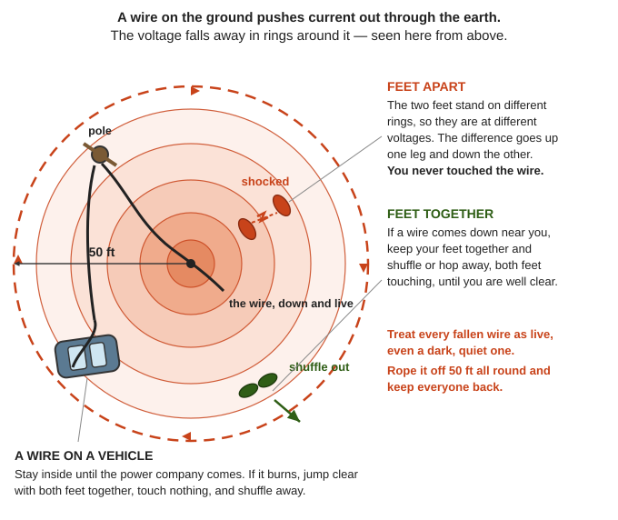

Guides › Heat, light & power · Emergency · Index A–Z
How the Power Grid Works, and Running a Local One
How electricity gets from a power plant to your plug, what protects it, why one fault can black out a region and why restarting takes so long, the dangers everyone must know, how a household fits in, and what a neighborhood or valley could really do to run its own small grid after a long collapse. Household power (solar, batteries, a creek turbine, a generator) is in Off-Grid Power and Engines, Motors and Generators; this guide is the next size up. The lineworker's books are in Southern-Oregon\Off-Grid-Power\Electrical-Basics (the Army's FM 5-424, the Navy Construction Electrician, here "CE", and NEETS) and Southern-Oregon\Engines-Motors\Electric-Motors (Electrician's Mate, TM 5-683). How the big grid fails and restarts is in Southern-Oregon\EMP-Solar-Storms, Southern-Oregon\Disaster-Scenarios\Grid-Supply-Pandemic (the FEMA–DOE Power Outage Incident Annex) and Southern-Oregon\Fuel\Fuel-Quality-Storage (FEMA P-1019). Village grids are in Southern-Oregon\Off-Grid-Power\Micro-Hydro and Southern-Oregon\Engines-Motors\Motors-as-Generators. Here, power comes from Pacific Power (County plan, p. 128). It reaches the valley on long lines over the mountains from the Grants Pass side, along US-199 (local knowledge; no book here maps the lines), and the county warns that in a winter storm "all of Cave Junction and the Illinois Valley could be cut off from power for an extended period" (p. 140).
The short version
- Treat every fallen or low wire as live, even a quiet, dark one: "You cannot tell by looking at them" (Map Your Neighborhood, p. 23). Rope it off 50 ft all round. If one comes down near you, keep your feet together and shuffle or hop away (IRPG, p. 38).
- A dead line can come back by itself. A recloser on the pole tries the line again, up to three times (CE, pp. 108–109), and a neighbor's generator plugged into a wall outlet sends power back out onto the line (CPSC, p. 1).
- Poles, transformers, pole fuses and everything on the pole side of the meter are a lineworker's job, done with tested rubber gloves, hot sticks and grounds. Lines count as live "until positively proved otherwise" (FM 5-424, p. 171). Without that training and gear, never touch them.
- The grid is a balance. Power made must match power used, every second, and the 60-cycle frequency shows how well. When it slips too far, protection trips plant after plant (EMP Commission, p. 37).
- A big blackout restarts slowly: "black start" plants first, then block by block. A large transformer takes 12–24 months to build (Outage annex, p. 60).
- At home, a generator connects only through a transfer switch: grid or generator, "never simultaneously" (FEMA P-1019, p. 124).
- A local grid after a collapse starts small: cut free of the dead lines, one source, loads kept below it, water and the clinic first, each house limited or metered, one trained operator and a daily log (Practical Action, pp. 10, 26; GTZ, p. 109).
- Old transformers and capacitors may hold PCB oil, a poison that builds up in the body. Don't open, drain, burn or spill them (TM 5-683, p. 143).
From power plant to plug
The grid has three parts: generation (power plants), transmission (high voltage over long distances) and distribution (the local lines) (EMP Commission, p. 34). Between them sit substations, fenced yards where lines meet, are switched, and change voltage (p. 36; Electrical grid).
| Step | What it is | Voltage |
|---|---|---|
| Power plant | Water, steam, gas or wind spins a turbine, which turns a generator (EMP Commission, pp. 34–35). The West Coast leans on big hydro dams and gas plants (Outage annex, p. 59) | The generator's own |
| Step-up transformer | At the plant: raises the voltage so the long lines carry less current | Up to transmission |
| Transmission lines | On towers, often over great distances (EMP Commission, p. 46) | 69,000–765,000 V (FEMA P-1019, p. 27) |
| Substations | Transformers, breakers and relays; most have nobody there | Stepped down, often several times (EMP Commission, pp. 36, 46) |
| Distribution lines ("primaries") | Poles along the roads, usually under 20 miles (EMP Commission, p. 36) | Mostly 2,400–34,500 V (CE, p. 103), "more commonly 13.5 kV" (EMP Commission, p. 36) |
| The transformer near you | A can on a pole, or a green box on a pad where lines are buried | Down to 120/240 V (CE, p. 103) |
| Service drop | Wires from the pole to the house, at least 12 ft over paths and 18 ft over roads (CE, p. 104) | 120/240 V |
| Meter and main panel | Where power is "metered, protected, and distributed through branch circuits" (FM 5-424, p. 142) | 120 V outlets, 240 V for big loads |
Why such high voltage? Power is volts times amps, and the loss in a wire grows with the square of the current, so the same power sent at higher voltage and lower current wastes far less (EMP Commission, p. 36; Electric power transmission). Double the voltage and the loss drops to a quarter (arithmetic).
Transformers are coils of wire on an iron core, with no moving parts; the side with more turns has the higher voltage (Electrician's Mate, p. 141; NEETS 2, p. 193). They are why the grid uses alternating current (AC) (Electrician's Mate, p. 141). They work both ways: 240 V pushed in at the bottom comes out as thousands of volts at the top (rule of thumb). That is why backfeed kills.
![A left-to-right strip from a power plant to a house. A turbine house with a step-up transformer, a steel transmission tower marked 69,000 to 765,000 volts, a fenced substation, a wood pole with a can transformer marked 2,400 to 34,500 volts stepped down to 120/240, a service drop to a house with a meter on the wall marked 120 volt outlets and 240 volt big loads. Green arrows along the top show power travelling that way. A red arrow runs the other way, from a generator plugged into a wall outlet in the house, out through the meter, up the service drop, through the pole transformer and out along the line, labelled back out at thousands of volts](img/POWER-GRID-GUIDE/plant-to-plug.svg) Plant to plug, with the voltage at each step (FEMA P-1019, p. 27; CE, pp. 103–104), and in red what a generator in a wall outlet sends back out (CPSC, p. 1; a diagram drawn for this guide).
Plant to plug, with the voltage at each step (FEMA P-1019, p. 27; CE, pp. 103–104), and in red what a generator in a wall outlet sends back out (CPSC, p. 1; a diagram drawn for this guide).
On the poles, primaries run three-phase (three live wires, often with a neutral) or single-phase; "delta" lines mostly serve motors and businesses, "wye" lines mostly homes (CE, pp. 103–104). Pole transformers are spread across the three phases to keep them balanced (FM 5-424, p. 47), and one usually serves one to a few houses (rule of thumb). A fused cutout and a lightning arrester sit beside it (CE, pp. 104, 106; Distribution transformer). The main switch at the house "can be used to turn off all interior power" (CE, p. 139).
120/240: two hot wires and a neutral
Three wires come from the transformer: two "hot" and a grounded neutral (CE, p. 138). Each hot to neutral is 120 V, for lights and outlets; hot to hot is 240 V, for a well pump, water heater or range. The neutral carries the difference when the two sides are loaded unevenly, so loads are spread across both (FM 5-424, p. 20; Split-phase electric power). Grounding the neutral "reduces the possibility of fire and shock" by holding one wire at 0 volts (p. 47).
AC, 60 cycles and staying in step
- AC reverses direction many times a second; in North America 60 times: 60 hertz (Hz) (NCAT, p. 17; Utility frequency).
- Frequency is speed: poles × rpm ÷ 120. A 2-pole generator at 3,600 rpm, or a 4-pole one at 1,800, gives 60 Hz (Electrician's Mate, p. 136).
- Frequency is the grid's fuel gauge. Load more than the turbines can carry and they slow down, so the frequency falls; drop load and they speed up (ESHA, p. 31; NRCan, p. 26). Utilities shed load automatically when it falls, usually somewhere between 59.7 and 58.5 Hz (ORNL, pp. 64, 71).
- Every generator on one grid turns in step. Before one joins, it must match the others' voltage, frequency, phase (peaks at the same instant) and phase order; joined out of step, "severe damage may result" (Electrician's Mate, p. 139). The whole grid must "precisely and reliably synchronize the frequency and phase" of every source (EMP Commission, p. 37).
- A big grid is a flywheel. All its spinning machines together act like "the inertia of a very large ocean going vessel" and soak up small shocks (FEMA P-1019, pp. 27–28). A small grid has none: one big motor starting drags its voltage and frequency down (FM 5-424, p. 113).
- Three separate grids. The lower 48 runs as the Eastern, Western and Texas interconnections, each in step inside and joined only by a few direct-current links, so a collapse in one does not cross to the next (EMP Commission, pp. 38–39; Outage annex, p. 59). The Illinois Valley is in the Western Interconnection, which reaches from western Canada to Baja California (Outage annex, p. 59).
What protects it
| Device | What it does |
|---|---|
| Fuse in a cutout (on the pole by a transformer, or where a branch leaves) | Melts on too much current; the holder drops open and hangs down, "signaling to the lineman that the fuse has blown" (CE, p. 106). Some cutouts hold three fuses and switch in the next by themselves (FM 5-424, pp. 91–92) |
| Recloser (poles, substations) | Opens on a fault, then closes again by itself; after the third try it stays open (CE, pp. 108–109). Many faults, from lightning or wind, clear themselves in a moment (FM 5-424, pp. 90–91) |
| Breakers and relays (substations, plants) | "On-and-off switches able to handle the large amounts of energy" (EMP Commission, p. 36); relays trip them to save transformers that take very long to replace (p. 47) |
| Disconnect switch | Makes a section dead for work; a plain one "cannot be opened while current is flowing": an arc forms (CE, p. 108) |
| Lightning arrester | Passes lightning and switching surges to ground (CE, pp. 106–107) |
| Grounding | Holds the neutral at earth and gives a fault a path, so a fuse opens instead of someone being shocked; a ground rod should read 25 ohms or less (FM 5-424, pp. 47–48) |
| Your breakers | Protect the house wiring. One that keeps tripping means overload or a short: never fit a bigger fuse or a jumper (FM 5-424, p. 174) |
Why one fault can black out a region
The grid's stability is "finely tuned and fragile" (EMP Commission, p. 36). A cascading failure runs like this:
- A line, a plant or a big block of load is lost at once: a storm, a fire, a fault.
- Power made no longer matches power used, so the frequency falls (or rises).
- Relays drop customers. If too much load drops, generators overspeed and trip themselves off to save the plant, which is "not coordinated with system protection" (ORNL, p. 66).
- Each trip widens the gap: "this cycle of load shed-generation trip-load shed ... has continued uncontrollably until major areas are without power" (same page). Relays tripping out of order "compound rather than mitigate the problem" (EMP Commission, p. 37).
- Power reroutes onto other lines, which overload and trip, "taking with it neighboring utilities in a cascading sequence of failures" (FEMA P-1019, p. 28).
How big a blow: most systems survive losing 10–15% of their capability; 15–25% can cause blackouts; at 35–40% complete shutdown is likely (ORNL, p. 69). A sudden loss of load is as bad: collapse is "possible at 1 percent loss, and is very likely above 10 percent" (EMP Commission, p. 50).
Islands. The grid is built to "break into islands of hopefully matched generation and load" so the rest survives (EMP Commission, p. 48). A local grid after a collapse is such an island, made on purpose (Islanding). Solar storms and EMP push current through long lines and can wreck big transformers; in March 1989 that collapsed Quebec's grid (pp. 47, 50; EMP guide).
Here: in April 2017 a windstorm left more than 60,000 people without power, mostly in Josephine County, and Pacific Power "reported the loss of one high voltage line, one major substation and five satellite substations" (County plan, p. 60). Snow in January 2021 left 45,000 customers in the county without power; in February 2019 over 2,500 lost it around Grants Pass, Cave Junction and O'Brien, days after fallen trees closed US-199 at the California line (p. 64). In dangerous fire weather Pacific Power may also cut power on purpose (p. 140). No book here names the valley's substations: the county lists only "Pacific Power substations" among Cave Junction's critical facilities (p. 124).
Why restarting takes days, weeks or months
Most power plants need power to start: pumps, fans, fuel and controls. Coal, nuclear and large gas plants need it from outside. A black start is a start with none: most black-start units are hydro plants, small gas or oil "peaking" units and diesels (EMP Commission, p. 45), started by compressed air or batteries (ORNL, p. 80).
Then block by block. A source and a load are "matched and gradually restored together"; if the frequency strays "outside very tight limits, it will all trip off and have to be put back together again", "almost an art rather than a science" (EMP Commission, p. 44). Substation breakers must be set with care for each link (p. 48), and "Restoration without some form of communication is also not possible" (p. 46). Critical loads come first (ORNL, p. 82).
| What happened | How long the power was out |
|---|---|
| 2003 northeast blackout (little damage) | Up to 4 days for 50 million people (Outage annex, p. 10) |
| Transmission collapse | "Days"; with damage over several states, "weeks" (FEMA P-1019, p. 29) |
| Big hurricanes and snowstorms | Mostly about 2 weeks; after Katrina, almost another month in Louisiana (Outage annex, p. 10) |
| A whole region down with no outside help (EMP) | "Weeks to months, at least in the best circumstance" (EMP Commission, p. 48) |
| One destroyed large transformer | 12–24 months to build (Outage annex, p. 60); then weeks at sea, and up to 6 months' notice to move it by road (Metatech, pp. 127–128) |
Big transformers are custom-made, cost millions and come from "a very small number of suppliers globally" (FEMA P-1019, p. 28); some utilities keep spares (Outage annex, p. 61).
After a Cascadia earthquake, the state's resilience plan expects 1 to 3 months to restore electricity in its "valley" zone (the Coast Range summit to the Cascades summit) and 3 to 6 months on the coast (Resilience Plan, pp. 22, 210), assuming roads and phones work (p. 201). Substations (their control buildings and transformers) and transmission lines are the weak points; the Bonneville Power Administration has been anchoring transformers and bracing substation equipment since 1993 (p. 198). A valley at the far end of long lines over the mountains should expect to wait longer than towns on the main lines (rule of thumb).
☠️ Dangers to everyone
What an untrained person must never do
- Touch, move, cut or step over a fallen wire, or anything it touches: a fence, a car, a tree, a puddle. "NEVER try to move them. NEVER try to hop over them. NEVER walk under a power line that is resting on a tree branch or fallen tree" (Map Your Neighborhood, p. 23).
- Climb a power pole or tower, or lean a ladder on one.
- Open, re-fuse or close a pole cutout, a transformer, a meter base or anything in a substation.
- Plug a generator into a wall outlet, or wire one to the panel without a transfer switch (CPSC, p. 1).
- Bring a ladder, pipe or boom near a line, or fell a tree that can reach one; even trained crews keep machines 10 ft away (CE, p. 91).
- Open, drain or burn an old transformer or capacitor (PCB, below).
- Pull someone off a high-voltage wire with a stick or rope: crews "do not depend on the insulating value of the wood" (FM 5-424, p. 168).
Low voltage kills too: "AC voltages as low as 67 volts ... have caused death" (FM 5-424, p. 174; Electrical injury).
Fallen lines and step potential
- "Always treat downed wires as energized!" Follow the wires two poles each way to find all that is down, then flag the area and post a guard (IRPG, p. 38), at least 50 ft all round (Map Your Neighborhood, p. 23).
- Step potential: a wire on the ground pushes current through the earth, and the voltage falls away in rings around it. The difference between your two feet can shock you without your touching the wire (Kuphaldt, pp. 109–110; Ground potential rise).
- Getting away: feet together, shuffle or hop. In a vehicle with a line on it, stay inside until the power company comes; if it burns, jump out with both feet together, touch nothing, and shuffle away (IRPG, p. 38).

The rings round a fallen wire, and the two ways of standing in them (Kuphaldt, pp. 109–110; IRPG, p. 38; Map Your Neighborhood, p. 23; a diagram drawn for this guide).- Fire near lines: smoke can make lines arc to the ground. Stop direct attack within 100 ft of transmission lines, keep 35 ft from towers, and never aim a straight stream of water at a line (IRPG, p. 39; Wildfire).
A dead line can come back to life
- A recloser: a line that just fell may go dead, then live again, up to three times. Crews set it to "single-shot" before working (CE, p. 109).
- Backfeed: a generator in a wall outlet endangers "utility workers and neighbors served by the same utility transformer" (CPSC, p. 1), stepped up to line voltage on the way (rule of thumb); see Off-Grid Power.
- Another line: a dead line can touch a live one, or pick up voltage from one running alongside or from distant lightning (rule of thumb). So crews put grounds between the source and their work when "the potential for contact between the de-energized circuit and an energized circuit is present" (CE, p. 91), work "between two sets of grounds", and first feel the line for a static charge with a switch pole (FM 5-424, p. 173).
- The utility restoring power, with no warning to you.
Crews prove a line dead with a tester checked on a live line before and after (FM 5-424, p. 171), lock and tag the switch, and never work alone (CE, p. 91). A household tester does not make a power line safe to touch.
Poles and towers
- Poles rot at and below the ground; lineworkers sound them with a hammer and bore the butt before climbing (FM 5-424, p. 150; CE, p. 132). A rotten pole can fall with you, or into the line.
- Climbing takes gaffs, a body belt, a safety strap, gloves and a hard hat rated for 20,000 V (FM 5-424, p. 150; CE, p. 91). "NEVER trust pins, crossarm braces, or guy wires as supports" (p. 133). A shocked climber needs a second trained climber with rubber gloves and a rescue rope (FM 5-424, p. 156).
- Leave guy wires alone: they hold the pole against the pull of the wires (CE, p. 92).
PCB oil in old transformers and capacitors
- PCBs were used mainly in transformers and capacitors, and in fluorescent-light ballasts. They last for decades and build up in the fat of fish, animals and people; they are a possible cause of cancer, and cause an acne-like rash, numbness, stomach upsets, headaches and tiredness (TM 5-683, p. 143). Heavy exposure damages the liver and can kill (Navy Electronics Technician, p. 25).
- Any oil-filled transformer or capacitor counts as PCB-contaminated unless a laboratory finds under 50 parts per million (TM 5-683, p. 143). Old nameplates may say Askarel, Inerteen, Pyranol or Aroclor (p. 144).
- With no laboratory, treat every old one as PCB (rule of thumb): never open or drain it, never use its oil (lamp oil, lubricant, fire starter, wood treatment), never burn it or the rags. If one leaks, keep people, animals, gardens and water away; soak the oil up with dirt or sawdust, wearing gloves, and bag and mark it.
- Big transformer cases hold fumes; air them out before anyone goes in (FM 5-424, p. 175).
If someone is shocked
- House wiring: switch off first. If you can't, push them clear with dry wood, and don't touch them until they are free (Practical Action, p. 23).
- A power line: wood and rope won't protect you. Keep everyone back until a trained person makes it dead (rule of thumb).
- Start CPR if they are not breathing (Field Care), and watch them: "Shock victims may suffer heart trouble up to several hours after being shocked" (Kuphaldt, p. 108).
How a household fits in
- Know your main switch. To turn the house off, switch off the branch breakers, then the main; to turn it on, the main first, then the branches (Map Your Neighborhood, p. 23).
- A generator only through a transfer switch, fitted ahead of the panel, so the house runs from the grid or the generator but "never simultaneously"; for a portable generator a manual switch is fine (FEMA P-1019, pp. 124–125; Transfer switch). Care and placement: Engines.
- Don't overload it: open the breakers of everything you don't need (FEMA P-1019, p. 125); start the biggest motor first, then add the small loads (FM 5-424, p. 113).
- Rooftop grid-tie solar goes dead with the grid; rewiring it for batteries is in Off-Grid Power.
- When the grid comes back: wait until it has been steady a while, shut the generator down, switch over, and turn things on one at a time. Every fridge, pump and heater starting at once jolts a line that has just restarted (rule of thumb).
- Talk to a neighbor who runs a generator off an outlet: their backfeed endangers you, them and any crew.
- Report fallen lines and outages to Pacific Power; its number is in the contacts table of Illinois Valley — Start Here.
A blown pole fuse and other simple faults
When a few houses on one transformer go dark while the neighbors' lights stay on, the fuse in its cutout has often blown, and the holder has dropped open (CE, p. 106). Re-fusing it is a lineworker's job. The cutout is part of the high-voltage line, at 2,400–34,500 V (pp. 103–104), and is worked with a long insulated stick. The fuse blew for a reason (a branch, an animal, a failed transformer) that must be found first, or the line comes back live onto whatever caused it (rule of thumb). A fuse is never replaced by a bigger one, a wire or a bolt (FM 5-424, p. 174).
What you can safely do instead (rule of thumb):
- Stay 50 ft back from anything down, and keep others back (Map Your Neighborhood, p. 23).
- Write down the pole's number tag, which cutout hangs open, what you saw and heard, and when; report it.
- Turn your main switch off, or switch over to your generator.
- After a collapse, keep that list, with every tree on a line, for the community's trained lineworker.
On your side of the meter: reset a tripped breaker once, after unplugging what was running; if it trips again at once, find the fault first (Electrician's Mate, p. 179; FM 5-424, p. 174). Some lights very bright and others dim, or a hot smell at the panel, can mean a broken neutral: main switch off until it is found (rule of thumb). The meter base and the wires above it stay live with your main off (rule of thumb).
Running a local grid after a long collapse
Village "mini grids", each with one small power plant and a committee, have served remote villages for over 25 years (Practical Action, p. 5; GTZ, pp. 106–107; Microgrid). Once one is built, "nearly 90% of the operations and maintenance can be handled by the community members themselves" (Practical Action, p. 9). A neighborhood in the Illinois Valley could aim for the same: a few kilowatts, a few buildings, well run.
Who may do what, today and after
(Rule of thumb throughout: the law varies by state and may change; the dangers don't.)
| Work | Today | After a long collapse |
|---|---|---|
| Utility poles, lines, transformers, cutouts, meters | The utility only | A trained lineworker only: the voltage is the same |
| A generator to a house | A transfer switch, put in as your state requires; any other way must suit the utility (FEMA P-1019, p. 124) | Still a transfer switch, by your most competent electrician |
| New wires between houses | Not without permits | Only as the community agrees, on a written map |
| Hydro on a creek | Water rights first (Off-Grid Power) | Agreed with everyone downstream |
| When the utility returns | — | Cut your grid off its lines before they are re-energized, and tell the crews what you built |
Start small, on your own wires
- One source and a few buildings close together, on your own 120/240 V cable, not the utility's poles. Small hydro plants feed loads "generally less than 500 feet" away (DOE Microhydro, p. 69). Farther costs power: use heavier wire, a shorter run or a higher voltage (NCAT, p. 18).
- Farther means transformers: a step-up transformer at least as big as the generator, with a high-voltage fuse and lightning arrester (DOE Microhydro, p. 69), a 10–15 kV line, and a step-down transformer at the far end (GTZ, p. 108). That is lineworker work.
- Several small islands beat one big one: ships run "split plant" so a fault on one switchboard darkens only its own loads (Electrician's Mate, p. 177). Use standard voltages and parts so it could join the grid later; expect it to grow along its line (GTZ, p. 107).
Cutting free of the dead grid
If your grid touches the utility's lines anywhere, your generator tries to power the whole dead line through every transformer on it: it overloads at best, and at worst puts thousands of volts where a crew or a neighbor is working (CPSC, p. 1; FEMA P-1019, p. 124).
- The simple way (rule of thumb): don't use the utility's wires at all. Every building on your grid has its main switch to the utility off, locked and labeled, and takes your power through its own transfer switch.
- If a stretch of utility line must be used, a trained lineworker opens the disconnect or cutout at every point where it meets the rest of the grid, proves it dead, grounds it, and locks and tags it (FM 5-424, pp. 171, 173; CE, p. 91). Disconnects open only with no load on them (CE, p. 108), from the ground with a switch stick, the handle grounded (FM 5-424, pp. 88, 90).
- Mark every open point on a map the operator keeps. Anyone who closes one without the operator's word can kill.
![The utility's poles and wires drawn in grey and labelled dead and not used. Five buildings stand in a row, numbered 1 to 5 and named Water pump, Clinic, Cold store, Radio and Houses. A dashed grey drop runs from the dead line to each building, ending at a red open switch with a padlock on it. Below the buildings a green cable runs from a power house on the left, with a riser up to each building, labelled your own 120/240 V cable, not the utility's poles, and a dimension line marked keep it short: small plants feed loads under about 500 ft](img/POWER-GRID-GUIDE/local-grid-cut-free.svg) Every building's main switch to the utility off, locked and labelled, and your own cable to the loads in order (CPSC, p. 1; DOE Microhydro, p. 69; ORNL, p. 82; a diagram drawn for this guide).
Every building's main switch to the utility off, locked and labelled, and your own cable to the loads in order (CPSC, p. 1; DOE Microhydro, p. 69; ORNL, p. 82; a diagram drawn for this guide).
The source
- Creek hydro runs day and night; measuring a creek, sizing and controllers are in Off-Grid Power, a salvaged generator for it in Engines.
- An engine generator runs as long as fuel and oil last (Fuel).
- Leave room to spare: motors need extra capacity to start (FM 5-424, p. 113); keep the steady load under about 80% of the rating (rule of thumb).
Keeping frequency and voltage steady
- Watch the frequency: falling means too much load, rising too little (ESHA, p. 31). Motors want it within 5%, and the voltage within 10% (FM 5-424, p. 86); a small hydro plant aims for 2–3 Hz either side of 60 (DOE Microhydro, p. 134).
- Two ways to hold it: a governor that sets the water to the turbine, or steady water with the spare power sent to a "ballast" load (ESHA, p. 31). An electronic load controller (ELC) does the second, usually into water heaters (NRCan, p. 26); the ballast should take about 20% more than the plant makes (Practical Action, p. 22). On an engine generator, the speed control sets the frequency (CE, p. 86).
- Meters at the power house: volts, amps, frequency and kWh; a frequency meter can be a row of vibrating reeds (NEETS 3, p. 63).
- Starting up: about 10% load first, preferably heaters, motors off, then add load in steps while the frequency holds (DOE Microhydro, pp. 133–134).
- Low voltage and frequency usually mean "Village demand is too high" or too little water: ask people to cut back (Practical Action, pp. 25–26).
Two generators on one line
They must match voltage, frequency, phase and phase order first (CE, p. 86). Synchronizing lamps wired between them blink as they drift: adjust the incoming engine's speed until the blinking is once a second or slower, and close its breaker just as the lamps go dark. If the lamps don't blink together, the phase order is wrong: shut down and recheck the cables. If an engine shudders, open the breaker at once. Then even out their loads to within 20% (CE, pp. 87–88; Synchroscope). Many small "inverter" generators pair only with their maker's own kit (rule of thumb).
Which loads come first
In a restart "critical loads are also considered first" (ORNL, p. 82). An order to start from (rule of thumb), for the community to settle:
| Load | Why | |
|---|---|---|
| 1 | Water: the well or town pump, sewage pumps | Water and sewer are "hindered" without power (Outage annex, p. 19); Water Wells |
| 2 | The clinic, and people who need power to live | At higher risk (same page) |
| 3 | Shared cold storage | Food for everyone (Preserving Food) |
| 4 | Radio and charging | How the grid's people talk (Radio) |
| 5 | Mill, workshop, water heating | "Productive use" (GTZ, p. 109), off-peak or as ballast |
| 6 | Each house's lights and small loads | Within a set limit |
Let a controller shed load. A load-management controller switches lower loads off when the plant is overloaded and back on when there is spare, letting a 10 kW plant serve 20 kW of loads; small switches in fridges and water heaters can do the same by sensing the frequency (NRCan, p. 15). Start big motors one at a time (FM 5-424, p. 113).
Wiring, metering and sharing
- Drops 12 ft over paths and 18 ft over roads, spans under about 100 ft (CE, p. 104; FM 5-424, p. 142); lose no more than 3% of the voltage on a branch, 5% in all (p. 47).
- Protection at both ends: breakers and a shock-sensing breaker (RCD) at the power house and every house, so a vine or a bird on the line trips it (Practical Action, p. 23); each fuse sized for the smallest wire it protects (FM 5-424, p. 174); every service grounded (pp. 47–48).
- Before any line repair, stop the turbine and the power house switch, and keep them off until done: "Switching off the main switch only has some risks unless the turbine is stopped." No line work in thunder; cut back trees and vines, brace leaning poles (Practical Action, pp. 11, 24).
- Meters: a kilowatt-hour meter counts what each house uses; read each dial at the number it last passed (NEETS 3, pp. 61–62). Meters from empty houses can be reused (rule of thumb).
- Or limits: a load limiter on each house's line stops one household taking "a disproportionate amount of power" (Small Wind, p. 32). Village schemes set a limit, for example 200 W a household; anyone wanting more asks the consumers' society (Practical Action, p. 10).
- Fair charges: per bulb for light, by meter for productive use, a lower "social" rate for the poorest, all set with the community, and "No free connections" (GTZ, p. 109). With no money, pay in work, fuel or food (Community & Barter). Houses too far to wire can charge batteries at the power house, best at night (GTZ, p. 106).
The operator, the committee and the log
- A committee runs it: a chair, a power house operator and assistant, someone for the lines and connections, and a bookkeeper (GTZ, p. 110). Only people it assigns do repairs, never alone (Practical Action, p. 10).
- Keep a log: date, time, generator and ballast volts, village and ballast current, frequency and energy, signed by the operator (Practical Action, p. 26). Compare the meters with normal every day, and walk the line monthly, more often in the wet season (p. 24).
⚠️ Old advice in the library to ignore
| Book says | Do this instead |
|---|---|
| If a line is falling, "stand on one foot or run" (Kuphaldt, p. 110) | Feet together; shuffle or hop away; stay in a vehicle unless it burns (IRPG, p. 38) |
| Pole climbing "is not difficult or hazardous if you are careful"; a pole that "sounds solid when hit with a hammer ... is safe" (FM 5-424, p. 150) | Written for trained crews. Without training, tested gear and a second climber, don't climb, and "assume the pole is energized" (CE, p. 134) |
| A tripped breaker "may ... be closed a second time without investigation" (Electrician's Mate, p. 179) | On a shared line, never close onto a line nobody has walked: someone may be touching it. Crews block reclosing first (CE, p. 109) |
| A buried water pipe "will always be used as the grounding electrode" (FM 5-424, p. 48) | Much buried pipe is now plastic and grounds nothing (rule of thumb): drive a rod 8 ft and aim for 25 ohms or less (same page) |
| House power at "110" and "220" volts (CE, p. 138), or 115 and 230 (Basic Electricity, p. 527) | Today it is 120/240 V (FM 5-424, p. 111); check nameplates before mixing old and new |
Pictures & diagrams
🖼️ = drawings in the books on this drive; the plain links are photos in the offline Wikipedia.
- The whole grid — EMP Commission, p. 35, FEMA P-1019, p. 28; the three interconnections — EMP Commission, p. 39; Electrical grid
- A transformer burned by a solar storm; moving a big one — EMP Commission, p. 47, Metatech, p. 129; ice on a line — FEMA P-1019, p. 30; Overhead power line
- Delta and wye lines, service drops and clearances — CE, pp. 103–105; cutouts, arresters, disconnects, an oil breaker — CE, pp. 106–109, FM 5-424, pp. 88, 91; Recloser, Disconnector
- Pole-top rescue — CE, p. 134, FM 5-424, p. 157; Lineworker
- 120/240 balanced; a meter socket; a transfer switch — FM 5-424, p. 111, CE, p. 139, FEMA P-1019, p. 125; Transfer switch
- Step potential round a fallen line — Kuphaldt, pp. 109–110; Ground potential rise
- A village grid, plant to house — GTZ, pp. 106–108; its control panel — p. 105; a load controller and load management — NRCan, p. 26, p. 15; Microgrid
- Synchronizing lamps; two generators in parallel — Electrician's Mate, p. 140, CE, p. 87; Synchroscope
- Meter dials; a reed frequency meter; the power house log sheet — NEETS 3, pp. 62–63, Practical Action, p. 26; Electricity meter
Related guides
- Illinois Valley — Start Here — local contacts, the utility's outage line, maps
- Off-Grid Power — a household's solar, batteries and creek hydro; never backfeed
- Engines, Motors and Generators — generator care, a salvaged generator on a water wheel
- EMP Guide — solar storms and EMP against the grid
- What to Expect — how long outages last, from a winter storm to the worst case
- Storing Energy Without Batteries — using the ballast load's heat
- Water Wells, Radio and Community & Barter — the first loads, and running a committee
- Wildfire and Floods, Ice Storms & Heat Waves — fire, trees and ice on lines
- Field Care — burns and CPR after a shock
- Fuel and Heat into Work and Power — feeding a generator, and power from heat
- How Town Water and Sewer Work — why the taps run dry a day or two after the power goes